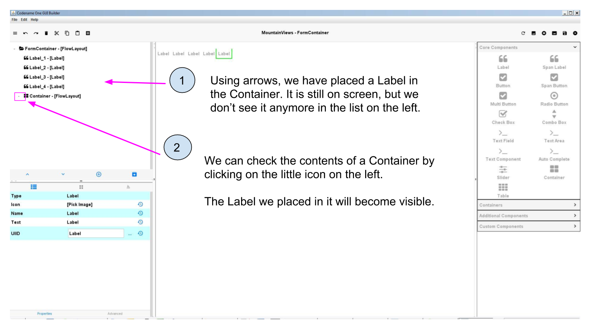
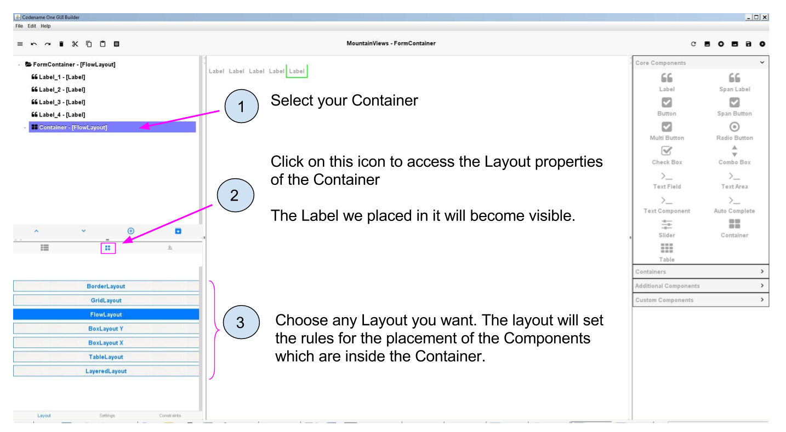

A Container’s role is not to show something, but only to help grouping some Components together, so that a Layout can be applied specifically to them.
CODAPPS
Using containers
last modified: 2018-01-23
'Escape' or 'o' to see all sides, F11 for full screen, 's' for speaker notes
You should have learned the previous lesson on Layouts before starting this one. |
1. Definition of Containers
We introduce the notion of Containers by showing one limit of Forms and Layouts:
Layouts help us organize the space of the Form but… the whole Form gets impacted all at once.
What if we prefer to have, say, the top of the Form organized as a Grid, and the bottom part of the Form organized with a Box Y Layout?
We can’t achieve this simply by applying a Layout to a Form. We need different layouts applied to different groups of Components.
This is what Containers will help us achieve.
A container is a Component that you can find in the Core Components, like the others:

Figure 1. Finding the Container among Core Components
The difference with other Components is that when you drag and drop a Container on the Form, it remains invisible.
This is normal.
2. Placing Components in and out of Containers
Once the Container is dragged and dropped onto the Form, we need to place Components in it (an empty Container has no purpose).
Let’s imagine we have 5 Labels in our Form, and then we added a Container:

Figure 2. 5 labels and a container
To move a Label or place it in the Container, we must select it and use these arrows:

Figure 3. Moving the Labels or placing them in the container

Figure 4. Showing the content of a Container
If we need to move a Component out of a Container, we must simply:
select it
move it up or down until it leaves the Container
we know the Component has left the Container when it not indented anymore.
All this moving around of Containers and Components is a gymnastics which requests some practice, so take the time to exercise on simple cases like the one above.
3. Applying a Layout to a Container
This is straightforward: all you need to do is:
select your Container,
click on the icon for layout,
select the layout you need
for a definition of each layout, see the previous lesson
These steps shown in the GUI Builder:

Figure 5. Applying a layout to a container
The power of Containers comes when several of them are in use: we can apply different layouts to each of them, achieving full flexibility for the design of our app.
4. Applying different Layouts to different Containers
Creating several containers on a Form allows to have different layouts applied to different groups of Components on the Form!
To illustrate: what if we want to have this kind of layout on our screen?

Figure 6. A type of design for an app
We can add several Containers on the Form, place some Components in each of them, and apply different Layouts to each of them.
Spend 5 minutes imagining how many Containers, and what type of Layouts, you’d need to achieve this effect in practice?
You can use a pen and paper to sketch your solution.
Ok? The solution is the following:
Put the Form in a Border Layout.
Add a Label for "Learn English with my app!", put it in the North position
Add a Label for "Open the Dictionary", put it in the South position
(nothing in West and East positions)
Add a Container in the Center position (let’s call it "Vocabulary Container")
Apply a Grid Layout to this Container, with 2 rows and 2 columns
Add 4 new Containers in the Vocabulary Container
Apply to each of these Containers a "Border" Layout
In each of these Containers, add a ScaledLabel for the picture in Center position
In each of these Containers, add a Label for the caption in South position
It might look long and complicated but this is actually nothing unusual for software development: constructing a precise interface takes time and trial and error. You need to practice. |
This is the end of the third module. You should now be able to:
Style your components from the GUI Builder and from theme.res
Be able to quickly switch from the GUI Builder and the file theme.res to update and refresh your styles
Understand what a Layout is
Play with different layouts
Understand what role Containers play
Place Components in and out Containers, re-order Components
Apply different layouts to different containers
With some practice, create exactly the look you need for your app.
You are now well equipped to achieve a very clean design for your apps. Congratulations! 🎉🎉🎉🎉🎉🎉
In the next module, we are going to learn how to test and release your app for Android an iPhones!
The end
Questions? Want to open a discussion on this lesson? Visit the forum here (need a free Github account).
Find references for this lesson, and other lessons, here.
Licence: Creative Commons, Attribution 4.0 International (CC BY 4.0). You are free to:
copy and redistribute the material in any medium or format
Adapt — remix, transform, and build upon the material
⇒ for any purpose, even commercially.
 This course is designed by Clement Levallois.
This course is designed by Clement Levallois.
Discover my other courses in data / tech for business: http://www.clementlevallois.net
Or get in touch via Twitter: @seinecle